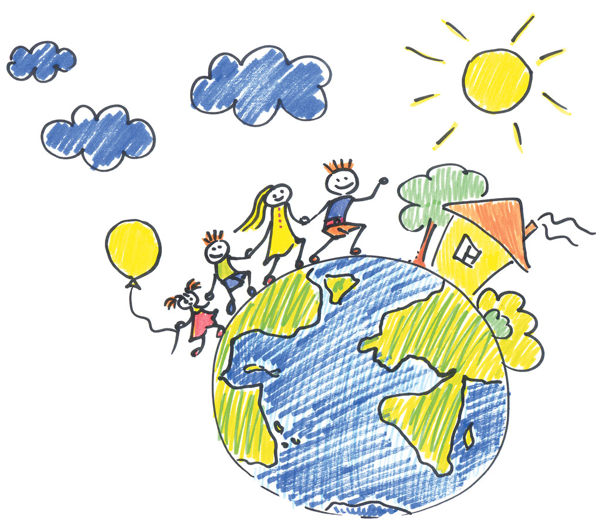
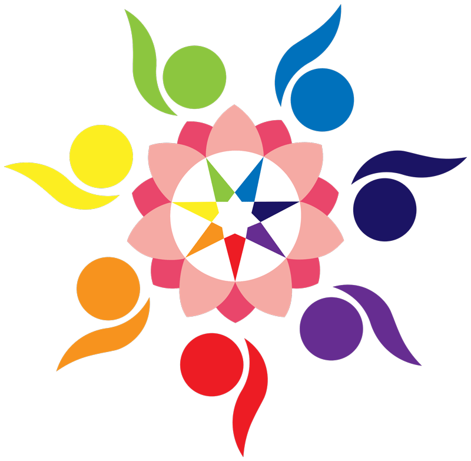

Dans le contexte sanitaire et social actuel, le Comité Santé Liberté Vendée a été créé par des citoyens en mars 2021, il a fusionné avec le Collectif Santé Liberté 85 en octobre 2021 donnant naissance au CSLV 85

© AdobeStock
Comité Santé Liberté Vendée 85
Le comité santé liberté vendée 85 s’appuie sur des réseaux nationaux: Bon Sens, RéinfoCovid et Le manifeste "La quatrième voie" (30 000 médecins), Enfance & Liberté, Reaction19.
Il dispose d’articles et de témoignages scientifiques dénués de tout conflit d’intérêt, afin de sortir d’une vérité unique, s’appuyer sur notre bon sens et ainsi retrouver nos propres repères pour traverser cette période sereinement.
Ensemble, dans un esprit démocratique, se retrouver est une force pour développer notre libre-arbitre et favoriser notre santé.
- Espace d’information et d’échanges
- Espace de liberté pour se relier à soi et aux autres

Pour nous rejoindre et recevoir nos annonces par courrier électronique, adhérez gratuitement à notre charte en adressant un message avec vos coordonnées à:
Pour participer à nos échanges sur telegram envoyez un message avec vos coordonnées et téléphone à:
Nos objectifs
- Toucher et rassembler un maximum de personnes
- Promouvoir la joie et la bonne humeur (par diverses actions)
- Permettre à chacun de retrouver sa liberté et ses droits
- Accueillir et informer les personnes en quête de bon sens et de relation
- Diffuser de l’information et relayer celle des autres collectifs
- Répondre aux besoins de rencontre et partage pour rompre l’isolement et l’exclusion
- Promouvoir la santé naturelle et les approches alternatives notamment concernant la prévention covidique.
Moyens
- Rendre facile l’accès au Comité Santé Liberté Vendée 85 et transmettre de l’information via un site, FB, Telegram, flyer et téléphone, VK
- Identifier un réseau de coordinateurs/trices locaux, des groupes géographiques et en diffuser la liste
- Organiser des rassemblements réguliers (LRSY)
- Organiser des événements locaux (pique-nique, promenade, jeux, etc.)
- Réaliser des vidéos, rédiger des textes courts, organiser des conférences
CHARTE DE BONNE CONDUITE
- Je traite l’autre comme je voudrais être traité(e)
- Nous prenons soin les uns des autres, car chacun est digne de considération
- Je parle en « JE » (ni TU ni ON) et j’accepte qu’il existe des points de vue différents (respect mutuel)
- Nous utilisons le bâton de parole comme outil lors de nos réunions
- Nous respectons nos différences et la dignité de chacun en étant complémentaires
- Nous offrons un cadre de sécurité (confidentialité)
- Les photos et vidéos sont diffusées avec l’accord des personnes concernées
Nos valeurs
(Ré)apprendre à exercer notre sens critique
- Adopter recul et discernement, retrouver le sens de la justesse
- Être vigilants quand aux sources d’information
Se reconnecter à SOI ; choisir d’être intègre, courageux et positif ; se recentrer pour ressentir
Agir de façon bienveillante et apolitique, dans le respect des croyances de chacun, en concertation, en privilégiant l’écoute
- créer les conditions du dialogue en partant des expériences de chacun
- et ainsi lever les blocages
Mener les actions en gestion horizontale (pas de chef, mais des coordinateurs)
Valoriser les compétences de chacun